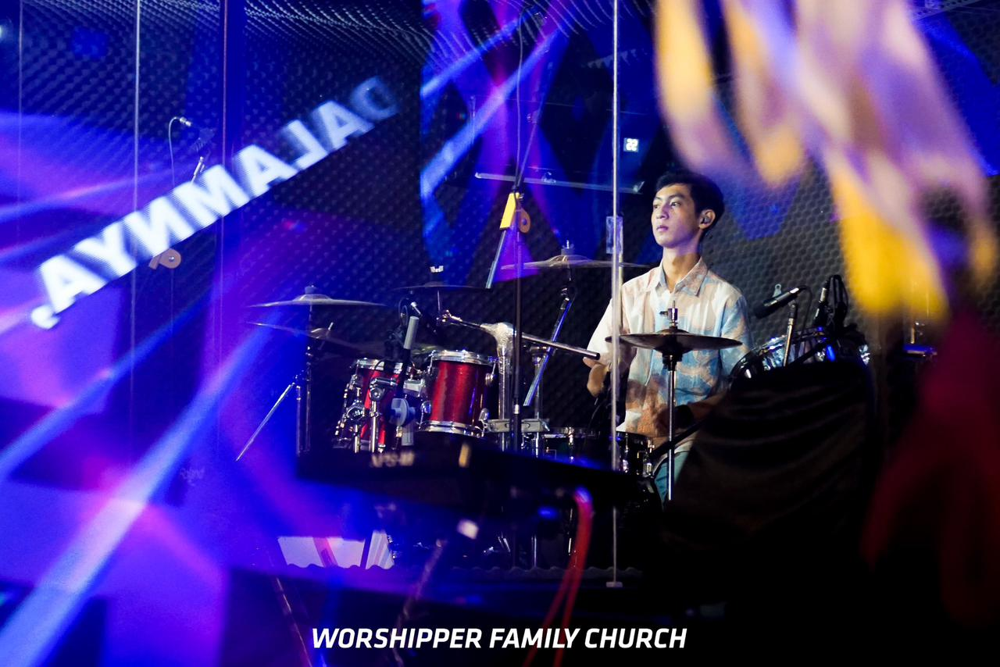
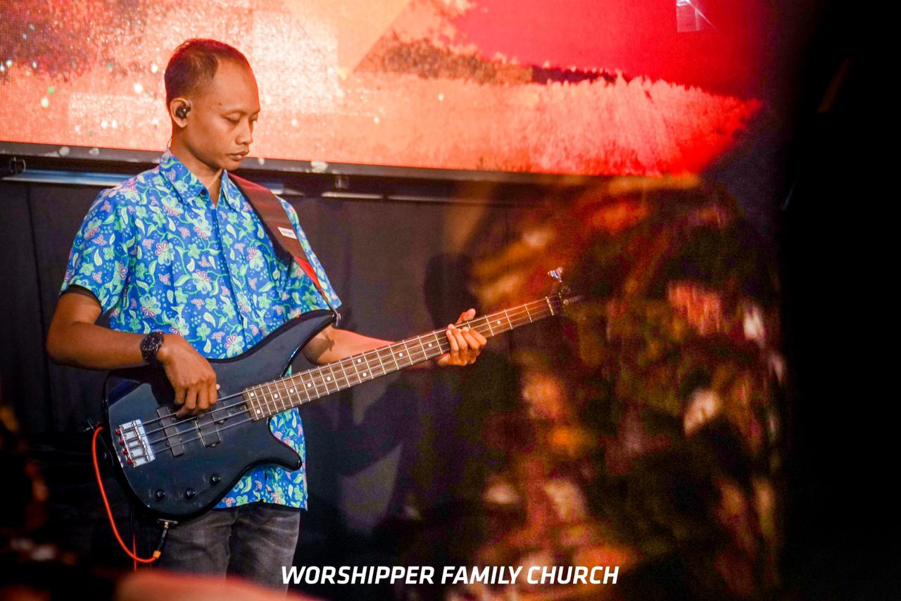
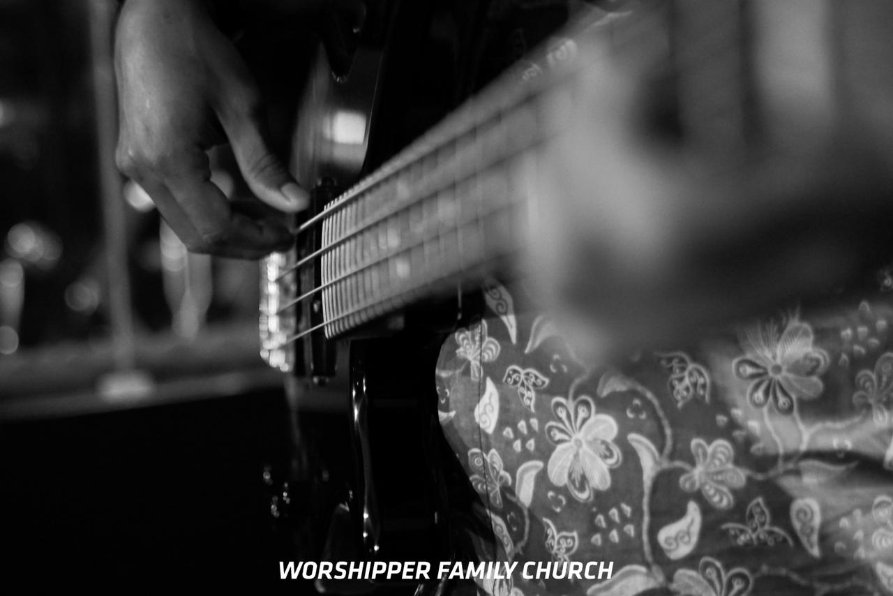
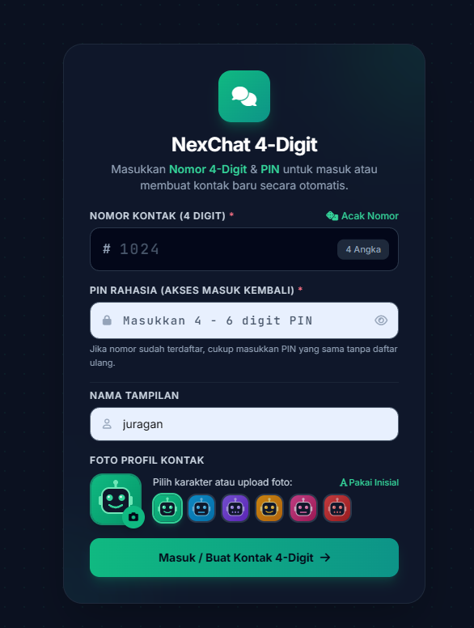
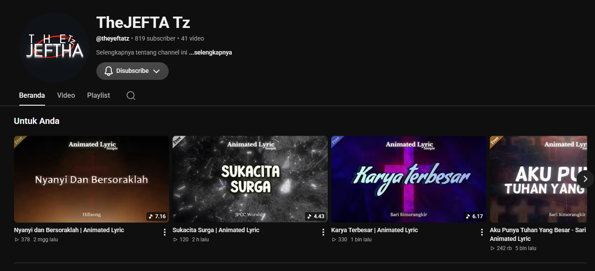

Pemrograman & Web
PythonHTMLCSSJavaScriptPHPGit / GitHubTailwind CSSSQLSupabaseBroadcast
Kemampuan yang saya pelajari dan hasil yang sudah saya buat.
Dokumentasi visual event. Klik foto untuk memperbesar.




Personal Project · 2026
Aplikasi web chat real-time ala WhatsApp dengan autentikasi akun pengguna dan mini-games di dalam chat.
Live Demo →
Content Creator · 2024 - Sekarang
Memproduksi dan mengedit video lyric animation: perpaduan tipografi, timing visual, dan sinkronisasi audio untuk rilis digital.
Lihat Channel →